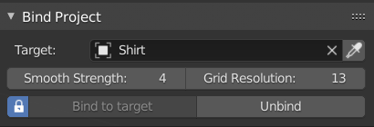

Bind Project#
This tool will snap and bind one 3d mesh, on surface of another, without flattening the mesh itself. This tool will create grid helper object, that is used to transfer motion from cloth to projected object.
IT useful for attaching pockets, bags, decals to surface of simulated mesh.

Note - for correct result apply scale on projected object. Also make sure projected object local Y - axis, is pointing toward the surface of the target cloth object.
Options:
- Target - usually the cloth object.
- Smooth Strength - Helps to smooth out the deformation (prevents abrupt changes in geometry of projected object after binding)
- Grid Resolution - resolution of projection. Bigger gives better results.
- Bind/Unbind - snap projected object to target. It will follow the target, until user disable it with 'Unbind'